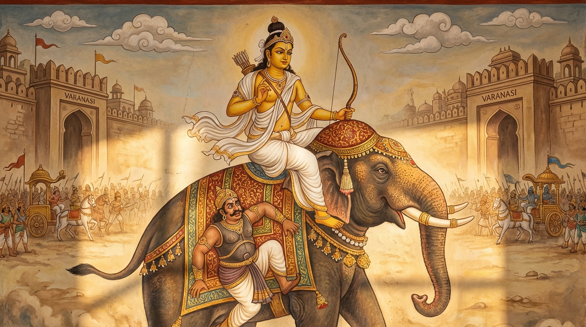

10. භීමසේන ජාතකය (80)
“යං තෙ පවිකත්ථිතං පුරෙ” යන මේ ජාතක දේශනාව බුදුරජාණන් වහන්සේ ජේතවනාරාමයෙහි වැඩ වාසය කරන සමයෙහි, තමා
ගැන වර්ණනා කිරීමට ගිජු වූ එක්තරා භික්ෂුවක් අරබයා වදාළ සේක. එක් භික්ෂුවක් “ඇවැත්නි, අපගේ ජාතියට සමාන
ජාතියකුත් ගෝත්රයට සමාන ගෝත්රයකුත් නැත. අපි මෙබඳු වූ මහත් ක්ෂත්රිය කුලයෙහි උපන්නෝ වෙමු. ගෝත්රයෙන් හෝ කුල
තත්ත්වයෙන් හෝ ධනයෙන් හෝ අප හා සම වූවකු නැත. අපට රන් රිදී ආදියෙහි කෙළවරක් නැත. අපගේ දැසි දස් කම්කරුවෝ ද ඇල්
හාලේ මස් සහිත බත් අනුභව කරති; කසී සළු අඳිති; කසී රටෙහි වූ සුවඳ විලවුන් ගල්වති. අපි දැන් පැවිදි වූ බැවින්
මෙබඳු රළු බොජුන් වළඳමු; රළු සිවුරු දරමු” යයි කියමින් තෙරුන් හා නවක, මධ්යම භික්ෂූන් අතර තමාගේ ගුණ කියමින්
අන්යයන් ජාති ආදියෙන් අවමන් කරමින්, මුලා කරමින් හැසිරෙයි.
ඉක්බිති, එක් භික්ෂුවක් ඔහුගේ කුලය පිළිබඳ
තොරතුරු පරීක්ෂා කොට එය බොරු පුරසාරමක් බව භික්ෂූන්ට ප්රකාශ කළේය. භික්ෂූහු දම් සභාවෙහි රැස්ව “ඇවැත්නි, අසවල්
භික්ෂුව මෙබඳු නිර්වාණ ගාමී සසුනෙහි පැවිදි ව තමා ගුණ ගයමින් අන්යයන්ට ගරහමින් වංචා කරමින් හැසිරෙතැ”යි ඔහුගේ
අගුණ කියමින් සිටියහ. බුදුරජාණන් වහන්සේ වැඩමවා “මහණෙනි, කවර නම් කථාවකින් මෙහි හුන්නාහුදැ”යි විචාරා, “මෙන්න මේ
කථාවෙනැ”යි කී කල්හි, “මහණෙනි, මේ භික්ෂුව දැන් පමණක් තමා ගුණ ගයමින් අන්යයන්ට ගරහමින් වංචා කරමින් හැසිරෙන්නේ
නො වෙයි; පෙරත් එසේ ම හැසිරුණේ ය”යි වදාරා අතීත කථාව ගෙනහැර දැක්වූ සේක.
යටගිය දවස බරණැස් නුවර බ්රහ්මදත්ත රජු රාජ්යය කරන සමයෙහි බෝසතාණන් වහන්සේ එක්තරා නියම් ගමක උසස් බමුණු කුලයෙහි
ඉපදී, වැඩිවියට පත්ව, තක්සලා නුවර දිසාපාමොක් ඇදුරුතුමා වෙතින් ත්රිවේදය ද අටළොස් විද්යාවන් ද උගෙන සියලු
ශිල්පයන්හි නිමාවට පත්ව ‘චූළධනුග්ගහ පණ්ඩිත’ නම් වූහ. ඔහු තක්සලාවෙන් නික්ම සියලු ශිල්ප ශාස්ත්රයන් සොයමින්
මහිංසක රටට ගියේය. මේ ජාතකයෙහි බෝසතාණන් වහන්සේ මදක් මිටි, නැමුණු සිරුරක් ඇත්තෙක් වූහ.
ඔහු මෙසේ සිතීය:
“ඉදින් මම කිසියම් රජකු වෙත යන්නෙම් නම්, ඒ රජු ‘මෙබඳු මිටි ශරීර ඇති ඔබ අපට කිනම් සේවයක් කරන්නෙහිදැ’යි අසනු
ඇත. එබැවින් මම උස මහතින් යුත් රූප සම්පත්තියෙන් යුතු (දැකුම්කළු) එක් පුරුෂයකු ඉදිරියට දමා (පළිහක් කොට), ඔහුගේ
පිටුපස සිට ජීවිකාව ගෙන යන්නේ නම් මැනවි.”
හෙතෙම එවැනි පුරුෂයකු සොයමින් යද්දී, භීමසේන නම් එක් නූල්
කටින්නකුගේ (පේෂකාරයෙකුගේ) නූල් වියන තැනට ගොස් ඔහු සමග පිළිසඳර කොට “යහළුව, ඔබගේ නම කුමක්දැ”යි විචාළේය.
“මම
භීමසේන නම් වෙමි.”
“ඔබ මෙබඳු මනා රූප සම්පත්තියකින් (උපධිසම්පත්තියෙන්) යුක්ත වී මෙවැනි ලාමක ක්රියාවක්
කරමින් ජීවත් වන්නේ මක් නිසා ද?”
“යහළුව, ජීවත්වීමට මඟක් නැති හෙයිනි.”
“යහළුව, මේ ක්රියාව නො කරනු. මේ
මුළු දඹදිව මා සමාන දුනුවායෙක් නැත්තේය. ඉදින් මම යම්කිසි රජකු බැහැ දකින්නේ නම් ඔහු මට ‘මෙවැනි මිටි අයකු අපට
කවර නම් සේවයක් කරන්නේදැ’යි අසනු ඇත. එබැවින් ඔබ රජුන් බැහැ දැක ‘මම ධනුර්ධරයෙකැ’යි කියන්න. රජතුමා ඔබට ජීවන
වියදම් දී නිබඳ රැකියාවක් දෙනු ඇත. මම ඔබට පැවරුණු කාරිය කරමින් ඔබ පිටුපසෙහි සිට ජීවිකාව ගෙන යන්නෙමි. එවිට අපි
දෙදෙනා ම සැපවත් වන්නෙමු. මගේ වචනය පිළිගන්න.”
ඔහු “යහපතැ”යි එය පිළිගත්තේය.
ඉක්බිති, බෝසතාණන් වහන්සේ ඔහු කැඳවාගෙන බරණැසට ගොස්, තමන් චූළ උපස්ථායකයා (කුඩා සේවකයා) වශයෙන් සිට, ඔහු පෙරටු
කොට රජ මාලිගාවේ දොරටුවෙහි සිට රජුට දැන්වූයේය. “එන්න” යැයි කී කල්හි දෙදෙනා ම ඇතුළට පිවිස රජුට වැඳ
සිටියහ.
“කුමක් නිසා පැමිණියාහුදැ”යි ඇසූ කල්හි භීමසේන මෙසේ කීය: “මම දුනුවායෙක් වෙමි. මුළු දඹදිව ම මා හා
සමාන වෙනත් දුනුවායෙක් නැත.”
“කොපමණ ලබන්නේ නම් මට සේවය කරන්නෙහිද?”
“දේවයිනි, අඩ මසකට දහසක් ලබන්නේ නම්
සේවය කරමි.”
“මේ ඔබගේ අනිත් පුරුෂයා කවරෙක් ද?”
“දේවයිනි, ඔහු මගේ උපස්ථායකයා (සේවකයා) ය.”
“එසේ නම්
මැනවි. සේවය කරන්න.”
එතැන් පටන් භීමසේන රජුට සේවය කරයි. පැමිණෙන සියලු කාර්යයන් බෝසතාණන් වහන්සේ විසින් නිම
කරනු ලබයි.
එසමයෙහි කසී රට වනයක බොහෝ මිනිසුන් යන එන මාර්ගය ව්යාඝ්රයෙක් අහුරා ගෙන සිටියේය. ඒ ව්යාඝ්රයා බොහෝ මිනිසුන්
අල්ලාගෙන කයි. එපුවත රජුට සැල කළහ. රජතුමා භීමසේන කැඳවා, “දරුව, ඒ ව්යාඝ්රයා අල්ලා ගැනීමට හැකිදැ”යි
ඇසීය.
“දේවයිනි, ඉදින් ව්යාඝ්රයකු අල්ලා ගැනීමට නො හැකි නම් මම කවර නම් දුනු දරන්නෙක් ද?”
රජතුමා ඔහුට
වියදම් දී පිටත් කළේය. ඔහු ගෙට ගොස් බෝසතුන්ට කාරණය කීවේය. බෝසත්හු “යහළුව, මැනවි, යන්න” යැයි කීවේය.
“ඔබ නො
යන්නේ ද?”
“එසේය. මම නො යමි. නමුත් ඔබට ව්යාඝ්රයා අල්ලා ගන්නා උපායක් කියමි.”
“එසේ නම් යහළුව, කියනු
මැනවි.”
“යහළුව, ඔබ මේ පිළිවෙළ අනුගමනය කරන්න:
- ව්යාඝ්රයා වසන තැනට තනිය ම වහා නො යන්න.
- දනව් වැසි මිනිසුන් රැස් කරවා, දුනු එක් දහසක් හෝ දෙදහසක් ගෙන්වා ගන්න.
- ඔවුන් සමග එහි ගොස් ව්යාඝ්රයා අවදි වී සිටින බව දැන, එතැනින් පලා ගොස් එක් ලැහැබකට පිවිස යටිකුරු ව (බිම දිගා වී) වැතිරී සිටින්න. (එවිට දනව් වැසියෝ ම ව්යාඝ්රයා තලා පෙළා අල්ලා ගන්නා ඇත).
- ඔවුන් ව්යාඝ්රයා මරා දැමූ කල්හි, ඔබ දත්වලින් එක් වැලක් සිඳ, එහි කෙළවර අතින් ගෙන මළ ව්යාඝ්රයා ළඟට යන්න.
- එහි ගොස් ‘පින්වත්නි, මේ ව්යාඝ්රයා කවුරුන් විසින් මරන ලද්දේ ද? මම මේ ව්යාඝ්රයා ගොනකු මෙන් වැලෙන් බැඳ රජු සමීපයට ගෙන යන්නට සිතා වැලක් කැඩීම සඳහා ලැහැබට පිවිසියෙමි. මා වැල ගෙන ඒමට පෙර ම, මොහු කවරකු විසින් මරන ලද්දේදැ’යි ඔවුන් බිය ගන්වා අසන්න.
- ඉක්බිති, ඒ දනව් වැසියෝ බියෙන් තැතිගෙන ‘ස්වාමීනි, රජුට නො කියනු මැනවි’ යයි කියා ඔබට බොහෝ ධනය දෙන්නෝය. රජු ඉදිරියේ ව්යාඝ්රයා ඔබ විසින් අල්ලා ගන්නා ලද්දේයැ යි කියා රජු සමීපයෙන් ද බොහෝ ධනය ලබන්න.”
භීමසේන ද “මැනවැ”යි පිළිගෙන, බෝසතුන් විසින් කී ක්රමයෙන් ම ව්යාඝ්රයා ගෙන වන මාර්ගය නිර්බිය කොට, මහජනයා
පිරිවරාගෙන බරණැසට අවුත් රජු බැහැදැක, “දේවයිනි, මා විසින් ව්යාඝ්රයා අල්ලා ගන්නා ලද්දේය; වන මඟ බිය රහිත
කළෙමි”යි පැවසීය. රජතුමා සතුටු ව බොහෝ ධනය දුන්නේය.
නැවත එක් දිනක් එක් මඟක් මීමකු විසින් අවහිර කරන ලදැයි
රජුට සැලකළහ. රජතුමා පෙර මෙන් ම භීමසේන යැවීය. ඔහු ද බෝසතුන් විසින් දෙන ලද උපදෙස් අනුව ව්යාඝ්රයා මෙන් ම මීමා
ද අල්වා ගෙන ආවේය. රජතුමා නැවත ද ඔහුට බොහෝ ධනය දුන්නේය. මෙසේ භීමසේන මහත් ධනවතෙක් විය. ධන මදයෙන් හා
ඓශ්චර්යයෙන් මත් වූ ඔහු බෝසතුන්ට අවඥා කොට ඔවුන්ගේ වචනය නො පිළිගනී. “මම ඔබ නිසා ජීවත් නො වෙමි. පුරුෂයා ඔබ
පමණක් ද?” ආදී රළු වචන කියයි.
ඉක්බිති, කීප දවසක් ඇවෑමෙන් එක් සතුරු රජකු අවුත් බරණැස් නුවර වටකොට “රාජ්යය හෝ දෙන්න; යුද්ධය හෝ කරන්න” යයි
රජුට හසුනක් යැවීය. රජතුමා “යුද්ධ කරන්න” යැයි භීමසේන යැවීය. ඔහු සියලු යුද ඇඳුමෙන් සැරසී රාජකීය ලීලාවෙන් මනාව
සරසන ලද යුධ ඇතුගේ පිටෙහි හිඳ ගත්තේය. බෝසත්හු ද ඔහු මිය යතැයි යන බියෙන් සියලු යුද ඇඳුමෙන් සැරසී භීමසේනගේ පසු
අසුනෙහි හිඳ ගත්තේය.
ඇතු මහජනයා පිරිවරාගෙන නුවර දොරින් නික්ම යුද බිම ඉදිරියට පැමිණියේය. යුද බෙර හඬ අසා
ම භීමසේන වෙවුලන්නට විය. බෝසත්හු “දැන්ම ම මොහු ඇතු පිටින් වැටී මිය යනු ඇතැ”යි සිතා, ඔහු බිම නො වැටීම සඳහා
භීමසේන වරපටකින් (යොතකින්) බැඳ ගත්තේය. භීමසේන යුද කෙරෙන තැන දැක මරණ බයෙන් බිය පත් ව තමාගේ මළ මූත්රවලින් ඇතු
පිට අපවිත්ර කළේය.
ඉක්බිති, බෝසත්හු “භීමසේන, ඔබගේ පෙර කී වදන් හා පසු වදන් සම නො වේ. ඔබ පෙර යුද්ධ දක්ෂයකු
මෙන් කතා කළේය; දැන් ඇත් පිට මළ මූත්රවලින් අපවිත්ර කරන්නෙහි” යයි කියා මේ ගාථාව කීහ:
“භීමසේනය, ඔබ විසින් පෙර යම් පුරසාරමක් කියන ලද ද, එහෙත් පසුව ඔබගේ මේ කුණු ශරීරයෙන් අසුචි වැගිරෙයි. භීමසේනය, ඔබගේ එදා (යුද්ධය ගැන කළ) පුරසාරම් කථාව ද, අද ඔබගේ මේ (බියෙන් තැති ගැනීම වූ) විපත්තිය ද යන මේ දෙක නො ගැළපේ.”
එහි “යං තෙ පවිකත්ථිතං පුරෙ” යනු, පෙර දී ඔබ විසින් “පුරුෂයා ඔබ පමණක් ද? මම පුරුෂයෙක් නොවෙම් ද? මම ද යුද්ධ දක්ෂයෙක්මි” යනාදී වශයෙන් යම් පුරසාරමක් හෝ අවමන් වචනයක් කියන ලද ද, මේ ඒ එක් අවස්ථාවකි. “අථ තෙ පූතිසරා සජන්ති පච්ඡා” යනු, පසුව ඔබගේ මේ ශරීරයෙන්, අපිරිසිදු ස්වභාවය නිසාත් වැගිරෙන ස්වභාවය නිසාත් ‘පූතිසර’ නම් වූ සිරුරු මළ දහර පිට වෙයි; වැගිරෙයි යන අර්ථයි. “පච්ඡා” යනු, පෙර දී කළ පුරසාරමට පසු කාලයෙහි හෙවත් දැන් මේ යුද බිම මුදුනෙහි දී ය. “උභයං න සමෙති භීමසෙන” යනු, භීමසේනය, මේ කරුණු දෙක නො ගැළපේ ය. ඒ කවරේද යත්? “යුද්ධකථා ච ඉදඤ්ච තෙ විහඤ්ඤන්ති” යනු, යම් ඒ පෙර කළ යුද්ධ කථාව ද, දැන් ඔබගේ මේ පෙළීම ද, ක්ලාන්තය ද, ඇත් පිට දූෂණය කිරීම ආදියෙන් වූ පීඩාව (විඝාතය) ද යන මේවාය.
මෙසේ බෝසත්හු ඔහුට ගරහා, “යහළුව, බිය නොවන්න. මා සිටින කල්හි ඔබ වෙහෙසෙන්නේ කුමටදැ”යි පවසා, භීමසේන ඇතු පිටින්
බස්සවා “ගෙදර ගොස් ස්නානය කරන්න” යැයි පිටත් කර හැරියේය.
ඉක්බිති “මම අද ප්රකට වන්නට සුදුසුයැ”යි සිතා යුද
බිමට පිවිස මහහඬින් නාද කොට, සතුරු සේනාව මැදට පැන බලකොටු බිඳ, සතුරු රජු පණ පිටින් ගෙන අවුත් බරණැස් රජු සමීපයට
ගියේය. රජතුමා සතුටු ව බෝසතුන්ට මහත් සම්පත් දුන්නේය. එතැන් පටන් ‘චූළධනුග්ගහ පණ්ඩිත’ නමින් ඔහු මුළු දඹදිව
ප්රකට විය. හෙතෙම භීමසේනට ජීවන වියදම් දී ඔහුගේ ගමට ම පිටත් කර යවා, දානාදී පින්කම් කොට කම් වූ පරිදි මිය
ගියේය.

බුදුරජාණන් වහන්සේ, “මහණෙනි, මේ භික්ෂුව පුරසාරම් දෙඩුවේ දැන් පමණක් නොව, පෙරත් පුරසාරම් දෙඩුවේ මයැ”යි වදාරා, මේ
ධර්ම දේශනාව ගෙනහැර දක්වා, පූර්වාපර සන්ධි ගළපා ජාතකය නිම කළ සේක.
“එකල භීමසේන වූයේ මේ පුරසාරම් දෙඩූ භික්ෂුව
ය. චූළධනුග්ගහ පණ්ඩිත වූයේ මම ම වෙමි.”
දසවැනි වූ භීමසේන ජාතක වර්ණනාවයි.
අට වැනි වරුණ වර්ගයයි.
එහි උද්දානය (සාරාංශ ගාථාව) මෙසේය:
- වරුණ
- සීලවනාග
- සච්චංකිර
- රුක්ඛධම්ම
- මච්ඡරාජ
- අසංකිය
- මහාසුපින
- ඉල්ලිස
- ඛරස්සර
- භීමසේන